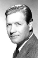

Country:United States, 70 minutes
Spoken languages:
Genres:Horror, Sci-Fi
Director(s):Ron Ormond, Herbert Tevos
Writer(s):Herbert Tevos
Video Codec:Unknown
Number: 1501


Certification:NR
Storyline:
A mad scientist, Dr. Aranya (Jackie Coogan), has created giant spiders in his Mexican lab in Zarpa Mesa to create a race of superwomen by injecting spiders with human pituitary growth hormones. Women develop miraculous regenerative powers, but men mutate into disfigured dwarves. Spiders grow to human size and intelligence.
Cast: 


Medium: Original DVD,
Comments: Part of: Sci-Fi Classics - 50 Movies
Loaned: No
Aspect ratio: Unknown